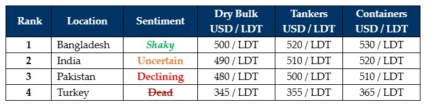

inWeekly Demolition Reports02/09/2024

Translated from Arabic, Fauda or ‘chaos’ is what unfolded across the Middle East this week as; Israeli PM Netanyahu’s vow to dismantle Hamas sawan increasing kill-rate of suspected Hamas militant leaders across Gaza that resulted in the world witnessing the counter-killings of 6 Israeli hostages whose bodies were recovered from the tunnels of Gaza, a confirmation of a one-on-one engagement of ISIS militants that hurt 7 U.S. Troops deployed in Iraq, Ukraine’s kamikaze drones upping the ante by attacking Russia’s main oil refinery, and a repeat Houthi attack on container vessel ‘Groton’ in the Red Sea that increased the volatility index for the region, one that has already driven global inflation & freight rates through the roof, and the already slim pickings of tonnage only got worse through August and presented itself at the various Indian sub-continent recycling waterfronts this week. While certainly through September and likely into Q4, the desperate question unraveling in everyone’s mind is whether this is expected to be the case through 2024 / early 2025? Interestingly, even though we have seen sub-continent ship recycling nations take independent measures to curtail the devastating state of economic affairs, one that has mercifully seen inflation decline, it is regretful to witness how “war” in the Middle East would cast a wider dragnet of global economic misery and make it that much worse for those States where the fighting is unfolding.
Meanwhile, vessel offerings have declined by about USD 60/LDT (and growing) since the peaks witnessed earlier in the year, as dry units are now seeing levels firmly below USD 500/LDT across sub-continent destinations, particularly on smaller LDT, laid up, Far-Eastern built, owned, and operated units. While there has been an overall dearth of large LDT vessels, this has likely been a relief to the Bangladeshi & Pakistani markets where L/C & banking limits for a growing number of recyclers has been getting stretched. Bangladesh has endured the most with drastic social and political upheavals that saw the untimely deaths of 100s of (mostly) students, followed by the ousting of PM Hasina, which then left the military in charge of damaging floods that have now beset the country across recent weeks that has led to a significant loss of lives. India, meanwhile, has only seen a depressive movement since the announcement of its recent budget. On the one hand, Alang recyclers remain frustrated that the freshly formed coalition government has deprioritized domestic infrastructure projects, and on the other, the ongoing import of cheap Chinese steel continues to afflict the recycling industry and led to an undercutting of prices on local inventories. As such, recyclers in Alang & Gadani remain beset by the import of cheap Chinese steel and remain in wait-and-watch mode before offering afresh on tonnage again, logically fearing further falls ahead. As a tumultuous time infects ship recycling nations, the focus should not be on buying ships, but rather, the on initiating some form of global peace in the hopes of a better tomorrow.
For week 35 of 2024, GMS demo rankings / pricing for the week are as below.

📄 Download PDF: Ship-recycling-market-insight-Week-35-8-30-2024-Fauda.pdf
Source: GMS,Inc.https://www.gmsinc.net/gms_new/index.php/web